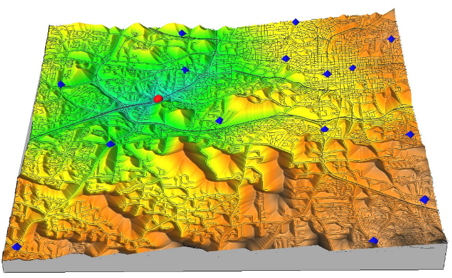
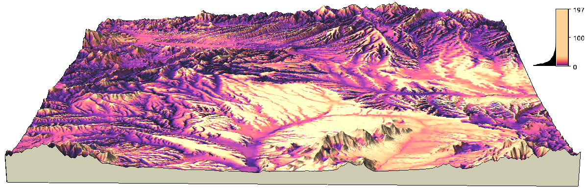
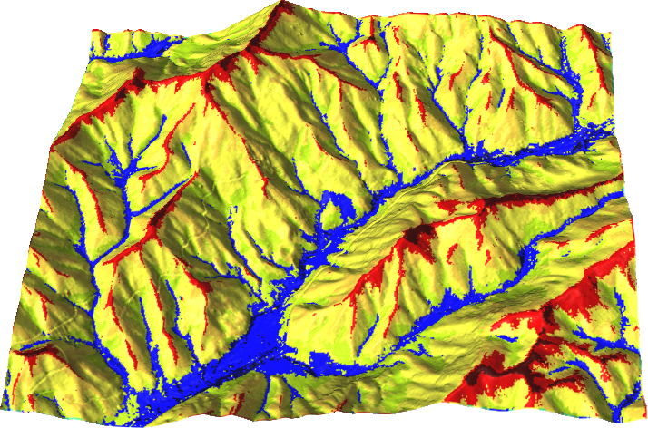
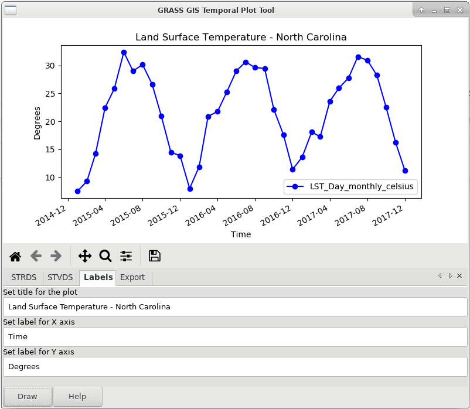
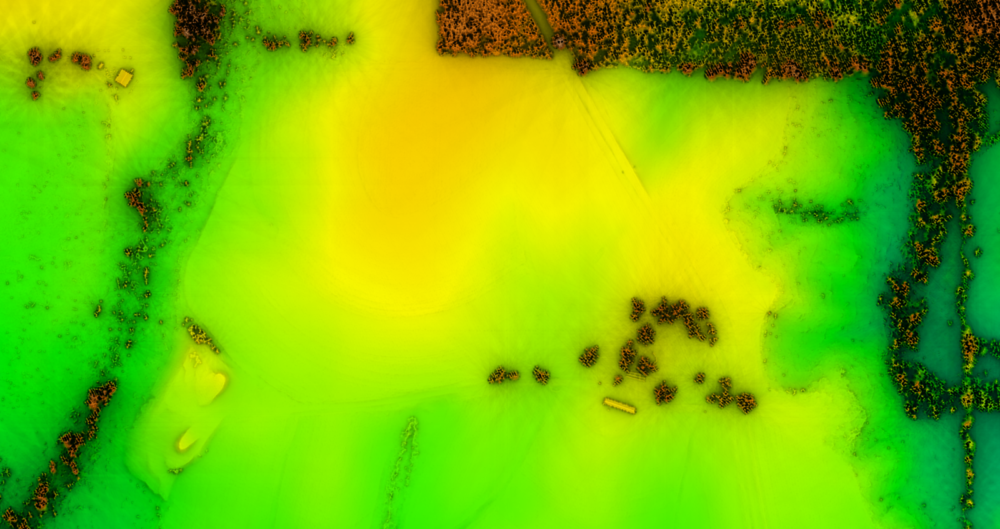
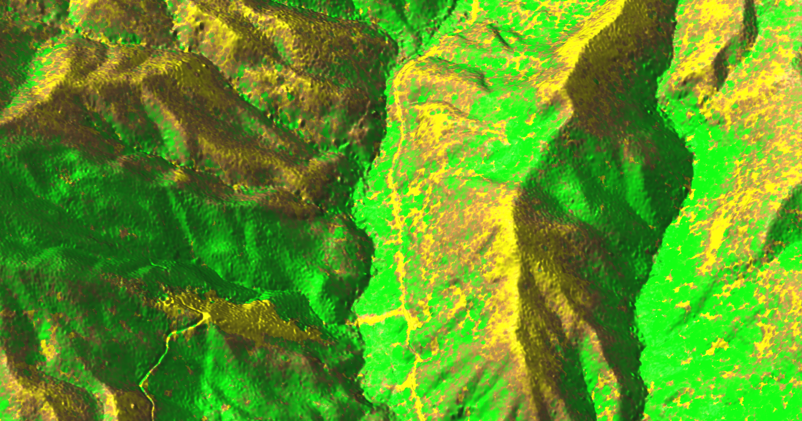
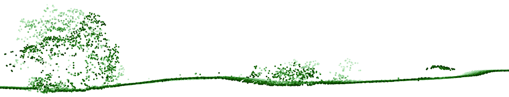
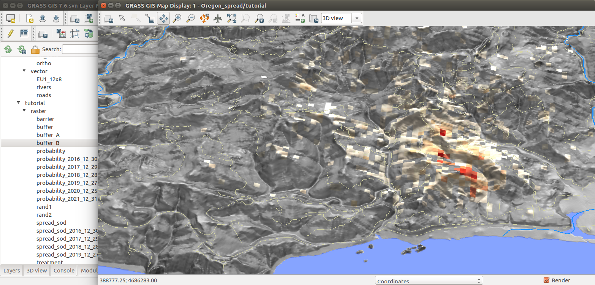
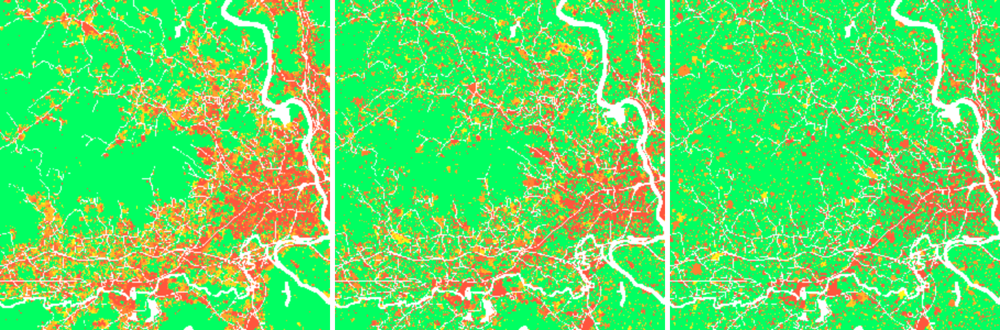

GRASS GIS
NCSU GeoForAll Lab
at the
Center for Geospatial Analytics
North Carolina State University

DOI, Open GIS Group, Apr 25, 2019
The Beginning
- 1980-1982: Ideas, predecessors and prototypes
- 1983: First reference manual published
- 1985: Geographic Resources Analysis Support System 1.0 released

Let William Shatner do the introduction
see full 15 min video at av.tib.eu/media/12963
GRASS GIS
- 90s a general purpose GIS from a land management system
- 1999 international team of developers + GNU GPL
- 2008 OSGeo Project
- 2018 35 years of GRASS GIS development
- 2019 latest release Mar 24, 2019 (7.6.1)
- check out last change (probably just few hours ago)
GRASS GIS Now

Community shares improvements
- GRASS GIS community provides software to the public
- Shares its source code
- Includes latest additions

Scientific foundation
- references to papers associated with modules
- references to related scientific papers

Return of investment
Learn once, use forever.
- Emphasis on backwards compatibility
- No increasing license fees over time
- Employer-independent and contractor-independent

Return of investment
2002 code running in 2017?
version 5.0 code works as is in 7.2:r.mapcalc depr.bin="if((elev - fill)< 0., 1, 0)"
although there is a better way to write it:
r.mapcalc "depr_bin = if((elev - fill) < 0., 1, 0)"
All-in-one
GRASS covers many fields.
- All matured tools available right away
- Download of experimental tools possible
- Hydrology, remote sensing, lidar, network analysis, …

Modules
Functionality is divided into modules (over 500)
| Prefix | Functionality | Example |
|---|---|---|
| r. | raster processing | r.mapcalc: raster map algebra |
| v. | vector processing | v.surf.rst: interpolation from points |
| g. | general management | g.remove: removes maps |
| d. | display and rendering | d.rast: display raster map |

Vector network analysis
- 2003: shortest path, traveling salesman, ...
- 2009: centrality measures, connected components, ...
- 2014: turn cost in network nodes
Cost surface calculations
Travel cost as travel time 
Viewshed
Here applied in total viewshed computation by Anna Petrasova
Geomorphon
r.geomorphon - landform detection
by Jarek Jasiewicz and Tomek Stepinski
Parallelized solar radiation
r.sun - new parallelized version

by Stanislav Zubal and Michal Lacko
Vector topology cleaning
- introduced in 2002
- continuous improvements
3D view
- visualization and analytical visualization
reviewing UAV fligh path

Temporal Framework
Manage and analyze spatio-temporal datasets (time series)
by Sören Gebbert and Thomas Leppelt
(visualization tools by Anna Petrasova and Luca Delucchi)
Animation Tool
Visualize spatio-temporal datasets and other series

by Anna Petrasova
Temporal Algebra

by Thomas Leppelt and Soeren Gebbert
Computational Features & Improvements
- long established 64bit (since 2016 on Microsoft Windows)
- large file support even on 32bit MS Windows
- Virtual raster mosaics r.buildvrt - creates virtual raster (VRT) mosaics from a list of input raster maps
- Faster and higher compression ZSTD - an improvement over ZLIB method, providing both faster and higher compression
- Segment library all-in-memory mode the segment library uses a new fast all-in-memory cache instead of a file-based cache if all data can be kept in memory faster cost path, point cloud binning, stream and flow, i.segment, v.surf.bspline

Addons and Extensions
Skyview
Non-directional alternative to shaded relief by Anna Petrasova
SLIC
i.superpixels.slic - image segmentation using SLIC superpixels
by Rashad Kanavath and Markus Metz
Tools for Sentinel Data
download, import, preprocessing, cloud detection, and masking of Sentinel 2 data

by Roberta Fagandini, Martin Landa, Moritz Lennert, and Roberto Marzocchi
Point clouds with PDAL
r.in.pdal - binning of points using PDAL for LAS reading
by Anika Bettge and Vaclav Petras
Point cloud transects
v.profile.points - transects of point clouds
by Vaclav Petras
Itzï
Hydrologic and hydraulic model of surface water flow

by Laurent Courty
PoPS
r.pops.spread - Pest or Pathogen Spread simulation
by NC State Center for Geospatial Analytics
FUTURES
r.futures - set of modules for urban growth modeling
by NC State Center for Geospatial Analytics
Interfaces
Command Line
The baseline interface for efficiency and reproducibility

Graphical User Interface
The interface for beginners and desktop

Simple Python Editor
Create Python scripts and modules with ease

by Vaclav Petras
Simplified batch processing
grass72 /grassdata/nc_spm/work1 --exec \
r.viewshed input=elevation output=viewshed \
coordinates=642964,222890
by Vaclav Petras
Links to source code
Documentation now links to relevant parts of the source code.
by Luca Delucchi
Data catalog
g.gui.datacatalog - browse, manage, and reproject raster and vector maps

by Tereza Fiedlerova and Anna Petrasova
Command line prevails: 1987

Command line prevails: 2019

Conclusion
Support
- Community support
- user mailing list (archived since 1991)
- GIS StackExchange
- …
- Commercial support
- Hire a GRASS GIS power user or developer